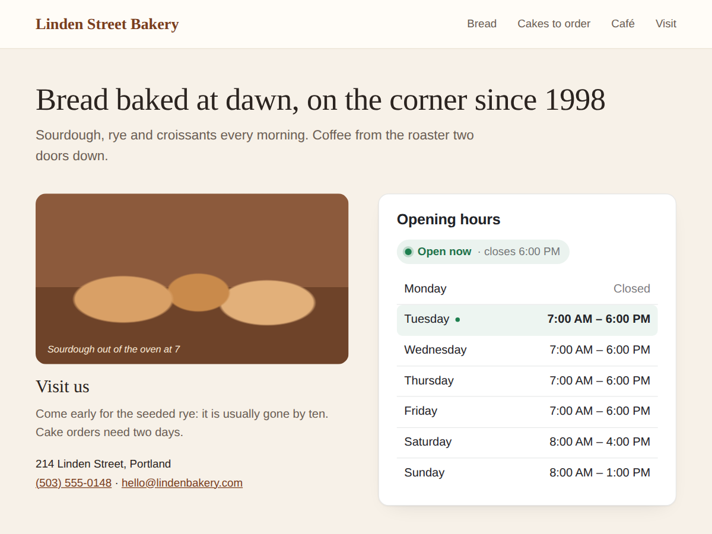

Business Hours
Opening hours table with a live Open now badge
- Uses the hours saved in your Business Info
- Open now or Closed, worked out in your time zone
- This week's hours with today marked
- Holidays, badge layout, 7 languages (Premium)

What it does
Business Hours puts your opening hours on any page, with a line at the top that tells visitors whether you are open right now: "Open now · closes 6:00 PM" or "Closed · opens tomorrow 9:00 AM". Today's row is highlighted.
The open or closed answer is worked out in your site's time zone, not the visitor's. Someone checking your shop from another country still sees the right answer. Shortly before closing time the line turns amber and says "Closing soon".
If your Business Info already has opening hours, the widget reads them and follows every change you make there, so you keep your hours in one place. If it has none, type them per day in the settings, like 09:00-17:00. Split days and late nights work too: a bar open until 2 AM shows as open after midnight.
A new widget looks finished the moment it is added. You can change the title, colours and font, or drop the card and show the plain table.
The free plan shows the week table and the live status line. Premium adds holidays and special days (from Business Info or typed in), a compact status badge and a today-only layout, day names in seven languages, a 12 or 24-hour clock, and your own words for open and closed.
Price
Free
- Week table of your opening hours
- Live open or closed line with next time
- Your colours, font and title
- No branding on your site
Premium
$4/month, yearly 20% off ($3.20/month billed yearly)
- Holidays and special days on their dates
- Status badge and today-only layouts
- Day names in 7 languages, 12 or 24 hours
- Your own words for open, closed, closing soon